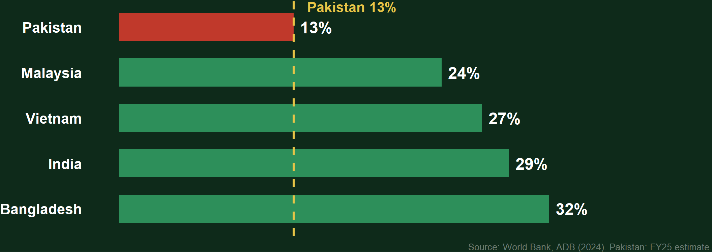
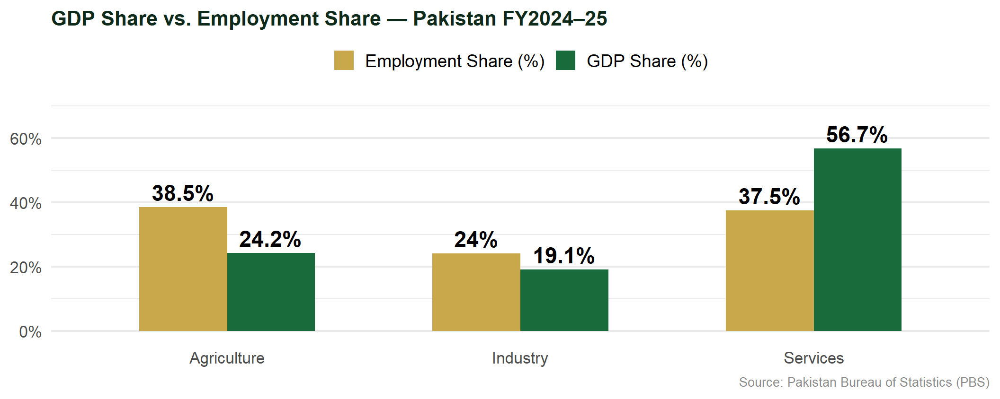
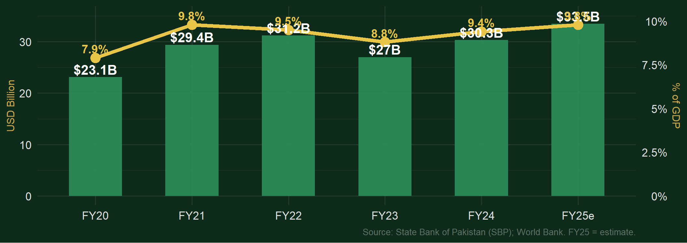
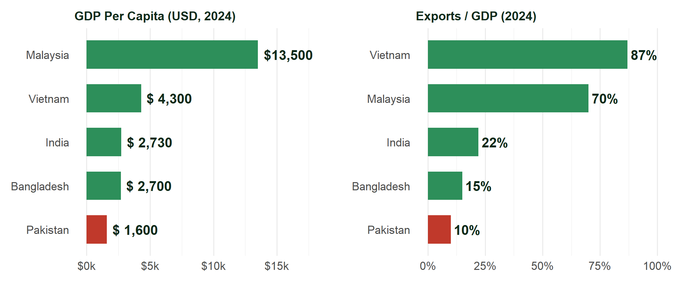
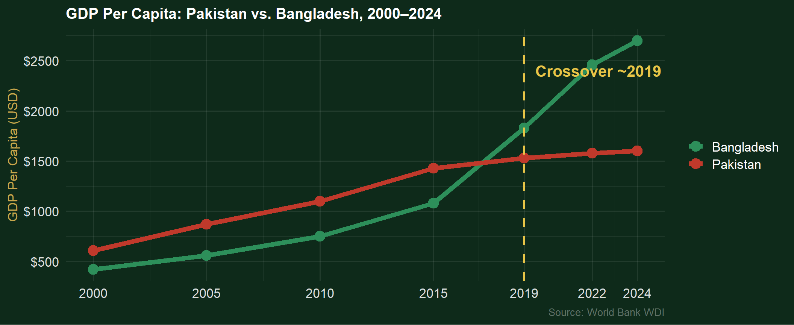
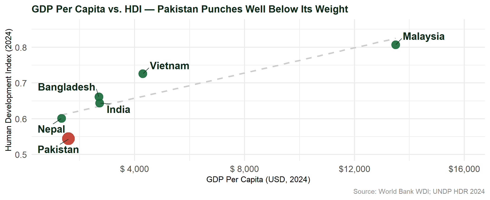

Measuring National Output: GDP, GNP & What the Numbers Hide
School of Economics, Quaid-i-Azam University, Islamabad
2026-01-01
Measuring National Output: GDP, GNP & What the Numbers Hide
Zahid Asghar
School of Economics, QAU · Spring 2026
Foundations
Gross Domestic Product
Definition · Components · Pakistan’s Numbers
GDP measures the monetary value of all final goods and services produced within a country’s geographical borders during a specific time period.
① Final
Count only the end product — the bread, not the wheat, flour, or dough. Each intermediate step would be counted twice otherwise.
② Produced
New output only. Not resale of existing assets, second-hand goods, or financial transactions.
③ Within Borders
Territorial, not nationality-based. Where it is produced counts — not who produces it.
🇨🇳 Chinese Engineer on CPEC (KP)
Earns USD 8,000/month inside Pakistan
✅ Adds to Pakistan’s GDP
Production within Pakistan’s borders
❌ Does NOT add to Pakistan’s GNP
Not a Pakistani resident
🇵🇰 Pakistani Doctor in the UK
Earns £12,000/month outside Pakistan
❌ Not in Pakistan’s GDP
Production is outside Pakistan’s borders
✅ Adds to Pakistan’s GNP
A Pakistani resident earning abroad
This single contrast explains why GNP > GDP in Pakistan — and why that gap grows as emigration accelerates.
\[GDP = C + I + G + (X - M)\]
C — Consumption ~80% of GDP
Highest in Asia. Saving rate only ~5%, leaving almost nothing for domestic investment.
I — Investment ~13% of GDP
A structural crisis. Bangladesh 32%, India 29%, Vietnam 27%. Pakistan cannot sustain 6%+ growth on this.
G — Government ~20% of GDP
Constrained by tax revenue of only ~10% of GDP. Over half goes to debt servicing.
NX — Net Exports Negative
Imports persistently exceed exports. Pakistan runs a structural current-account deficit.
Investment as % of GDP — Pakistan vs. Regional Peers (2024)

Pakistan needs 25–30% investment/GDP to sustain the 6–7% growth needed to absorb 3–4 million new labour entrants each year.
📦 Expenditure — What was spent?
\[C + I + G + NX\]
Counts final purchases across all agents. Most commonly reported by PBS, IMF, and ADB for Pakistan.
🏭 Production — What was produced?
Value added by sector:
Used for sectoral growth analysis.
💰 Income — What was earned?
Wages + Profits + Rents + Interest
Pakistan’s problem: 72% of non-agri workers are informal → wages unrecorded → output is systematically understated.
All three approaches yield the same GDP in theory. Large discrepancies reveal measurement failure — serious given Pakistan’s ~$457B informal economy.

Agriculture employs 38.5% of workers but generates only 24.2% of GDP. Industry fell from ~24% (2005) → 19% today: premature deindustrialisation.
\[\text{Real GDP} = \frac{\text{Nominal GDP}}{\text{GDP Deflator}} \times 100\]
| Year | Inflation | Real Growth |
|---|---|---|
| FY21 | 8.9% | 5.7% |
| FY22 | 12.2% | 6.1% |
| FY23 | 29.2% | 0.3% |
| FY24 | 23.4% | 2.4% |
| FY25e | ~8.5% | ~3.0% |
⚠️ The FY23 Nominal Illusion
Nominal GDP appeared to grow. With 29% inflation, real output grew just 0.3% — essentially zero. Citizens reading nominal headlines were misled while poverty soared.
FY25 “Recovery”
Inflation fell from demand destruction and the global commodity supercycle reversing — not genuine supply-side improvement.
From Territory to Nationality
Gross National Product
Why GNP > GDP in Pakistan — and what it reveals
GNP / GNI measures the total income earned by a country’s residents, regardless of where that income is generated.
\[\text{GNP} = \text{GDP} + (\text{Factor Income Earned Abroad} - \text{Factor Income Paid to Foreigners})\]
➕ Adds to Pakistan’s NFIA
➖ Reduces Pakistan’s NFIA
Remittance Inflows — USD Billion and % of GDP (FY20–FY25)

~9.4% of GDP — one of the highest ratios globally. India: 3.5%. A structural crutch: reflects failure to create competitive domestic employment.
| GDP | GNP / GNI | |
|---|---|---|
| Core concept | Territorial — where production occurs | Nationality — who earns the income |
| Chinese CPEC engineer in KP | ✅ In Pakistan’s GDP | ❌ Not in Pakistan’s GNP |
| Pakistani doctor in UK | ❌ Not in Pakistan’s GDP | ✅ In Pakistan’s GNP |
| Remittances | ❌ Not included | ✅ Core component |
| IMF programme targets | ✅ GDP-based | — |
| World Bank poverty measure | — | ✅ GNI per capita used |
Pakistan’s GNP exceeds GDP by ~USD 25–30 billion annually — remittances ($30B) far exceed profit repatriation by foreign firms (~$4B).
| Item | USD Billion |
|---|---|
| GDP at market prices (FY24) | 374 |
| ＋ Remittances & factor income | +30.3 |
| ＋ Investment income abroad | +1.2 |
| － Profits repatriated by MNCs | −4.1 |
| － Debt interest paid abroad | −2.8 |
| ≈ GNP / GNI | ≈ 399 |
⚠️ The Remittance Paradox
High remittances make per-capita GNP > per-capita GDP — citizens appear better off than domestic production implies.
But every skilled Pakistani abroad is a productivity loss to the domestic economy. The premium compensates for structural failure — not genuine prosperity.
Pakistan in Perspective
Regional Comparison
What the numbers look like next to our neighbours

Pakistan: lowest exports/GDP (10%) in the region · GDP per capita well below every peer

Bangladesh exports: $6B → $55B (2000–2024) · Pakistan: $9B → $30B · Female LFPR: 43% vs. 24%
Critical Perspective
What GDP Misses
Limitations · Pakistan Evidence · Alternative Measures
1. Ignores Income Distribution
FY22: GDP grew 6.1% — yet poverty rose.
GDP measures the size of the pie, not who gets a slice. Pakistan’s growth has bypassed the bottom 40%.
World Bank (2025): poverty 45%, extreme poverty up from 4.9% → 16.5% despite positive GDP growth.
2. Misses the Informal Economy
72% of non-agricultural workers are informal.
The informal economy (~$457B) is larger than the formal economy (~$340B).
GDP understates actual output and inflates the apparent tax-to-GDP ratio.
3. Excludes Non-Market Work
Pakistan’s female LFPR is just ~24% — lowest in South Asia.
Millions of hours of domestic labour, childcare, and subsistence farming go entirely uncounted in GDP — a massive share of total welfare-generating activity.
4. Ignores Environmental Costs
The 2022 floods cost Pakistan an estimated USD 30 billion — roughly two years of GDP gains.
The destruction was not subtracted from GDP. Reconstruction spending actually added to it. True welfare progress is far slower than headlines suggest.
5. Ignores Quality of Life
Pakistan ranks 164th / 193 on the UN Human Development Index (2024).
Life expectancy: 66 years · Learning poverty among highest in Asia.
GDP growth has not translated into health or education gains — output and welfare have decoupled.
6. Quantity Not Quality of Growth
A construction boom and a manufacturing productivity surge look identical in GDP figures.
Pakistan’s recent growth: low-productivity services, remittance-fuelled consumption, and construction — not high-value manufacturing or technology.

Nepal has a lower GDP per capita yet a higher HDI (0.601 vs. 0.544). GDP is not converting into welfare.
📊 HDI (UNDP)
Life expectancy + Education + GNI per capita
Pakistan: 0.544 · Rank 164/193 (2024)
🔢 MPI (OPHI)
Poverty across health, education & living standards
Pakistan: 38.4% multidimensionally poor (2023)
💸 World Bank Poverty Rate
Updated poverty lines (HIES 2018–19 data)
Pakistan: 45% poor · 16.5% extreme poverty (2025)
🌿 Genuine Progress Indicator (GPI)
GDP adjusted for inequality, environment & household work
No official GPI for Pakistan — but would be far below its GDP given flood losses and high inequality
Macro Diagnosis
Pakistan’s Growth Problem
The boom-bust cycle · What 6–7% growth actually requires
The arithmetic:
ADB FY26 forecast: 3.0%
Government target: 4.2%
Both figures are below the minimum needed to prevent unemployment rising. Pakistan is falling further behind — not catching up.
What 6–7% growth requires:
🏭 Investment → 25–30% of GDP (currently 13%)
📦 Exports diversified beyond textiles (stuck at ~$30B)
⚡ Energy → competitive industrial tariffs (region’s highest)
📋 Tax base → 15–16% of GDP (currently ~10%)
👩🎓 Human capital → reverse learning poverty (generational commitment)
Pakistan has engaged with the IMF 25 times since 1950 — roughly every 2–3 years on average.
① Crisis
BOP collapse
Reserves depleted
Rupee crash
Inflation spikes
② IMF Entry
Austerity
Rate hikes
Devaluation
Import squeeze
③ Stabilisation
Inflation falls
Reserves rebuild
Surplus achieved
GDP recovers
④ Premature Boom
Fiscal slippage
Import surge
Reform fatigue
Programme exits
⑤ Next Crisis
Structural drivers
unchanged
↺ Return to ①
Each stabilisation restores macro indicators — but never addresses the structural causes: low exports · narrow tax base · energy circular debt · institutional fragility
Government’s FY25 Narrative ✅
Inflation: 38% peak → ~8.5%
Primary fiscal surplus: 3 consecutive years
SBP reserves: rebuilt to $14.5B
Policy rate: cut 1,100 bps to 12%
ADB growth forecast: 3.0%
What the Data Shows ⚠️
Inflation fell from demand destruction — not supply reform
Fiscal surplus via crushing thin tax base — not broadening it
Reserves rebuilt by suppressing imports — not earning through exports
Net FDI: >80% retained earnings — not fresh capital
3.0% growth is a “dead cat bounce” — far below 6%
The improvements are cyclical, not structural. The next crisis is a question of when, not whether.
On Measurement
On Pakistan’s Economy
“GDP is the most powerful single number we have — and among the most dangerous if used alone.”
GDP captures market-based economic activity consistently and comparably. For Pakistan it tracks the business cycle, validates IMF targets, and anchors budget planning.
But taken alone it hides 72% informal employment, misses USD 457B of uncounted activity, ignores the distribution that left 45% in poverty, and fails to subtract the $30B cost of the 2022 floods.
Pakistan’s challenge is not just to grow GDP — it is to ensure growth is investment-led, export-driven, and human-capital-intensive enough to break the 25-programme IMF cycle and lift nearly half the population out of poverty.
Questions?
Zahid Asghar
School of Economics, Quaid-i-Azam University
zahid.asghar@qau.edu.pk
Next Lecture: National Income Accounting — The Circular Flow and Pakistan’s Leakages
Economy of Pakistan · GDP & GNP · Zahid Asghar · QAU